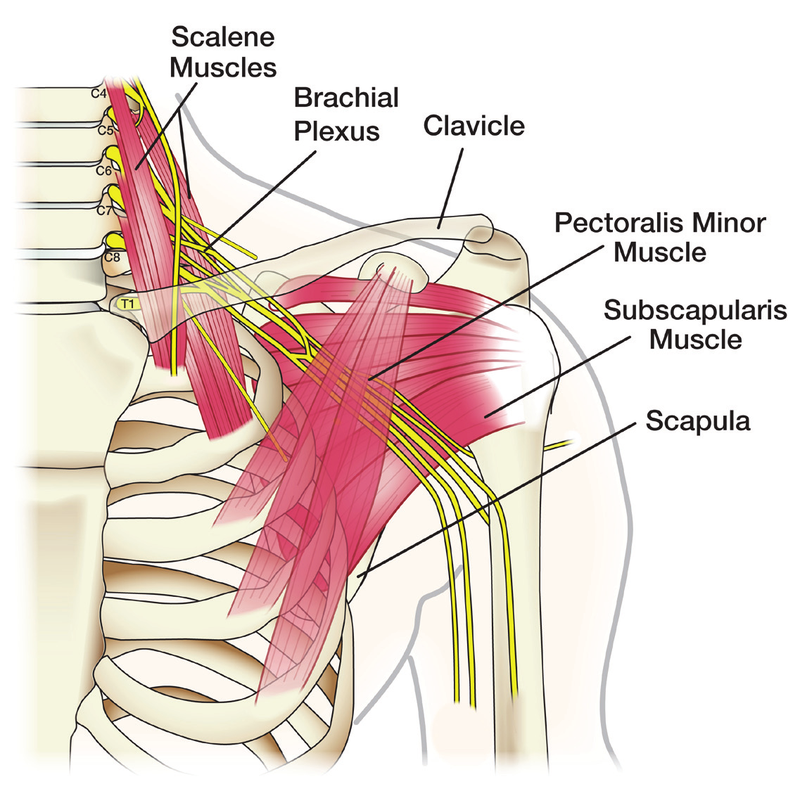

Condición
Lesión del Plexo Braquial
Daño a la red de nervios entre el cuello y el hombro que controla los músculos y la sensibilidad del brazo y la mano.

Illustration © American Society for Surgery of the Hand
¿Qué es una lesión del plexo braquial?
El plexo braquial es un grupo de nervios que salen de la médula espinal en el cuello, pasan por debajo de la clavícula y se ramifican hacia el brazo. Estos nervios llevan señales desde el cerebro hasta los músculos del hombro, el brazo y la mano, y traen de vuelta la sensibilidad de la piel. Una lesión del plexo braquial puede causar debilidad, pérdida de sensibilidad o parálisis de parte o de todo el brazo. Las lesiones van desde estiramientos leves que se recuperan en semanas hasta desgarros graves que requieren cirugía para recuperar la función.
Síntomas comunes
- Debilidad o pérdida completa del movimiento en el hombro, el brazo o la mano
- Entumecimiento o pérdida de sensibilidad a lo largo del brazo
- Dolor ardiente, eléctrico o punzante en el brazo
- Un brazo que cuelga flojo al lado del cuerpo
- Una mano que no puede agarrar o dedos que no se mueven
¿Por qué ocurre?
El plexo braquial puede lesionarse por estiramiento, compresión o desgarro de los nervios. Las causas más comunes son:
- Traumatismo de alta velocidad. Los accidentes de motocicleta, los accidentes de auto y las caídas son la causa más común en adultos. El hombro se separa del cuello, estirando los nervios.
- Golpe directo o aplastamiento. Un golpe fuerte al lado del cuello o del hombro, o una dislocación del hombro, puede comprimir o desgarrar los nervios.
- Lesiones deportivas. Los deportes de contacto pueden causar un "stinger" o "burner": una lesión temporal por estiramiento que generalmente se recupera rápido.
- Heridas de bala o arma blanca. Pueden cortar directamente parte del plexo.
- Tumores o radiación. Con menos frecuencia, los tumores o el tejido cicatricial de la radiación pueden comprimir los nervios.
- Lesión al nacer. El plexo braquial puede estirarse durante un parto difícil.
La gravedad depende de si los nervios están estirados pero intactos, parcialmente desgarrados, completamente desgarrados o arrancados de la médula espinal. Esta distinción determina si se espera la recuperación solo con el tiempo o si se necesita cirugía.
Opciones de tratamiento
Tratamiento no quirúrgico
- Observación y terapia de la mano. Las lesiones leves por estiramiento a menudo se recuperan por sí solas en semanas o meses. La terapia mantiene las articulaciones en movimiento y los músculos listos para trabajar de nuevo cuando los nervios se curen.
- Control del dolor. Las lesiones del plexo braquial pueden causar dolor nervioso fuerte. Los medicamentos usados específicamente para el dolor de nervios, junto con la terapia, son parte del plan.
- Férula. Un cabestrillo o una férula a la medida protege el hombro y ayuda a prevenir la rigidez durante la recuperación.
- Estudios de nervios. Un electromiograma (EMG) y un estudio de conducción nerviosa se hacen generalmente a las 3 o 4 semanas, y a veces se repiten más adelante, para saber qué tan afectados están los nervios y si están empezando a recuperarse.
Tratamiento quirúrgico
El momento de la cirugía importa. Los nervios se curan muy despacio, y los músculos que pierden su inervación empiezan a atrofiarse permanentemente a los 12 a 18 meses. Cuando se necesita cirugía, generalmente se hace dentro de los primeros meses después de la lesión para dar la mejor oportunidad de recuperación.
- Exploración y reparación del nervio. Si un nervio está cortado, los dos extremos se cosen de nuevo bajo un microscopio.
- Injerto nervioso. Si falta o está dañado un segmento del nervio, se puede usar un pequeño nervio sensitivo de la pierna como puente.
- Transferencia de nervio. Un nervio que está funcionando y que hace un trabajo menos importante se reconecta para asumir el trabajo de un nervio más importante que no se está recuperando. Esta suele ser la mejor opción para recuperar la función del hombro y del codo.
- Transferencias de tendones y músculos. Más adelante en la recuperación, se puede mover un músculo que está funcionando para sustituir a un músculo que ya no funciona.
- Transferencia de músculo libre funcional. En casos graves, se trasplanta un músculo de otra parte del cuerpo y se reconecta con microcirugía para recuperar movimientos específicos.
Qué esperar en su visita
El Dr. Barrera tomará una historia detallada de la lesión, examinará el hombro, el brazo y la mano para probar cada grupo muscular, y revisará la sensibilidad en cada área nerviosa. Se pueden pedir un EMG y estudio de conducción nerviosa, una resonancia del plexo braquial o una mielografía por CT para saber qué nervios están lesionados y qué tan grave es. Juntos armarán un plan que combina terapia, estudios de nervios y, si es necesario, una cirugía con el momento cuidadosamente elegido. La recuperación del plexo braquial es un proceso largo que se mide en meses y años, no en semanas, y un equipo coordinado que incluye terapia de la mano y control del dolor es parte del cuidado.
Llámenos si tiene nueva debilidad en el brazo o la mano, nuevo entumecimiento que no mejora, dolor nervioso fuerte o que empeora, signos de infección en un sitio quirúrgico, o si siente que el brazo se está poniendo rígido o frío y pálido.
Relacionado
¿Preguntas?
Llame a su consultorio para preguntas no urgentes:
- NYU Langone Laurelton · 646-501-4950
- NYU Orthopedic, Woodside · 929-429-3222
- NYU Orthopedic, Richmond Hill · 718-206-6923
- Jamaica Hospital Ambulatory Care Center (ACC) · 718-301-0720
Consulte la información de nuestras oficinas para direcciones y números de fax.